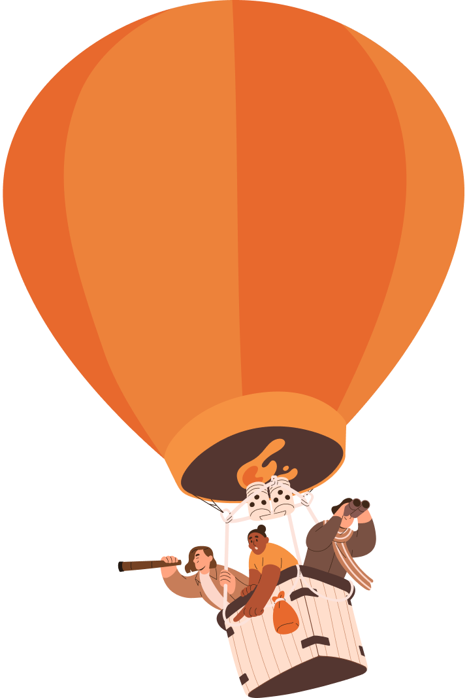

Merdiven ayak ayak çıkılır.
“계단을 오르려면 반드시 맨 아래부터 딛어야 한다.”
하루 20분으로 차근차근 배우는 튀르키예어!
WELCOME TO
시원스쿨
튀르키예어

Merdiven ayak ayak çıkılır.
“계단을 오르려면 반드시 맨 아래부터 딛어야 한다.”
하루 20분으로 차근차근 배우는 튀르키예어!
WELCOME TO
시원스쿨
튀르키예어
튀르키예 아이스크림만 알고 튀르키예어는 모른다구요?
튀르키예어의
매력을 경험해보세요
튀르키예어와 한국어는
어순이 똑같아요
한국어와 비슷한 문법체계를
가지고 있어요!
언어 희소성으로 강력
스펙 쌓아요
터키어 우대 기업이
많아졌어요!
튀르키예어 여행
다채롭게 즐겨요
튀르키예어로 현지인들과
더 즐거운 시간 보내요!
튀르키예어 첫걸음을
시원스쿨과 함께하세요!
총 76강 커리큘럼
다양한 예문/기초어휘로 튀르키예어 마스터!